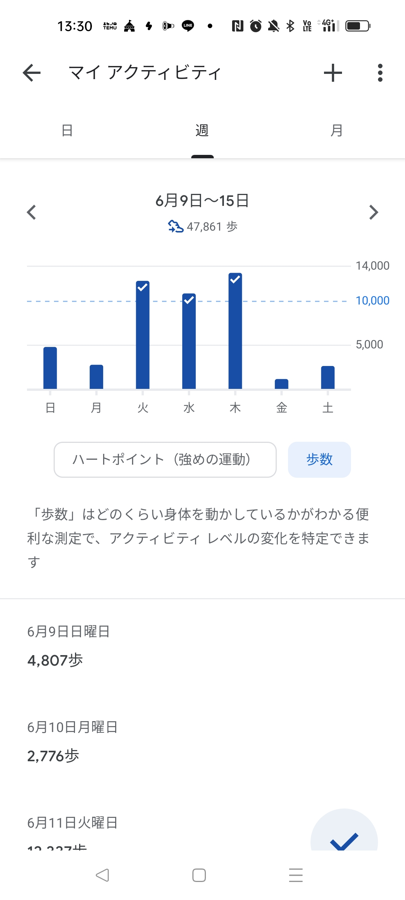
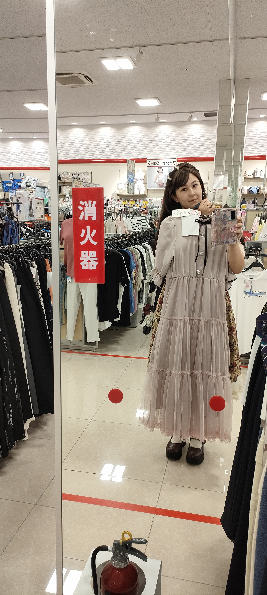
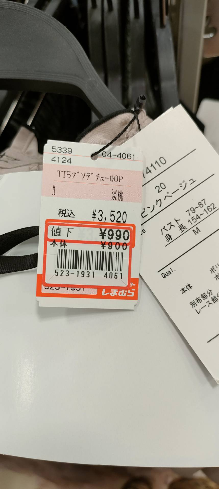
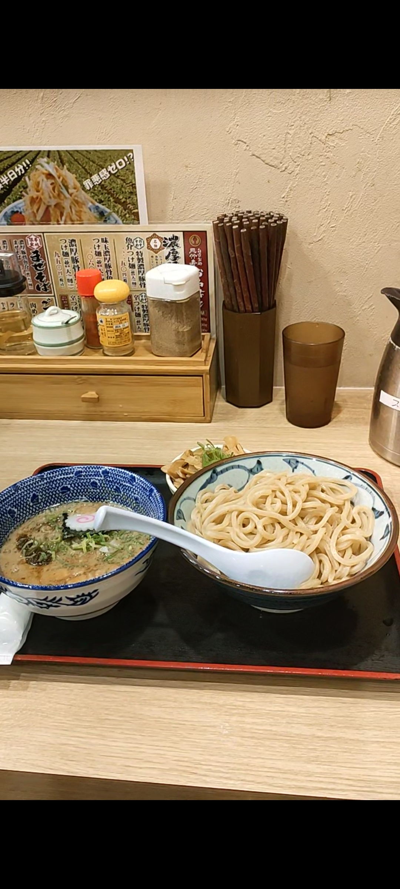
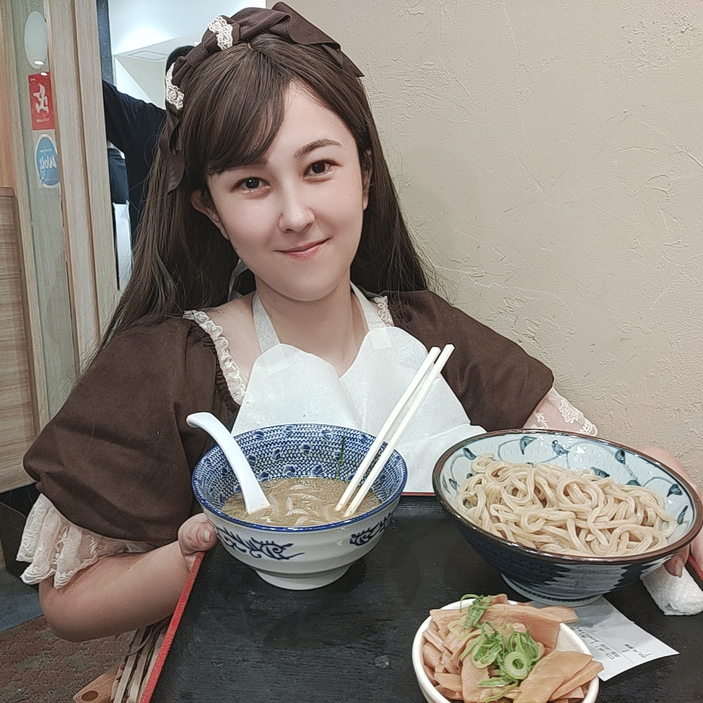

2024/06/18 ☔
ファーマーズおじさんの副産物🌻としまむら様
前もって言っておくね！
日記更新なかなかできてなくて、もうシェアしたいことがいっぱいあるの！
私の職場にはファーマーズおじさんがいます！
毎週、自宅で栽培してるお野菜を採れたてで職場に大量に何種類も持ってきてくれるおじさんです😊
このファーマーズおじさんが去年の12月に職場の花壇にひまわりを植えて、4月に私の顔の2倍程のひまわりが育ち、先月その種を大量(多分30～40粒？)程譲ってもらったのですが、乾燥させてから植えてね～と教わったものの、3日くらい袋に入れっぱなしで忘れ去られてて、気がついたらカビっぽいのが種に纏ってて、“あーもうダメかもしれない”と思ってそのまま捨てるのも可哀想で自宅の駐車場うらの原っぱに放ったのですが、まさかの多分成長してるっぽいんですよ！
でも、ちりちりばらばらに放たずにその辺にぽーんしたので密集してて……
ひまわりちゃんごめんなさ～いって感じです🙇♀️ ̖́-
でも、明らか葉が他と違っててここに放ったのできっとひまわりの集団が育ってます🌻🌻🌻🌻🌻

定期的に成長を記録したいと思います💕
ちなみに先週のウォーキング！
腰痛のせいであまり頑張れませんでした💦

でも、嬉しいことに久しぶりに着用したパンツが最後に着用した時より明らかに緩く感じるようになってて、むに超感動しております🥺❤
継続といえば！勉強も継続して頑張ります～！
前回のコーディングラボのランチタイムには、父の日の20％割引きクーポンが発行されていたのでアクロスプラザ2Fにある三竹寿に行ってまいりました！！
ここ、移転する前の老店舗の時から、夫婦で気に入っているつけ麺屋さんで、移転してから金額も上がり、かなり量が減っちゃったのですが、お得な時はつい足を運んでしまうお店です！
行列だったので、そこはもちろんパパに並んでもらって、待ち時間に私は同じフロアにはいっているみんな大好き“しまむら”さんで探索してきました👧
そしたら～💕
出会ってしまったんですよ～！！
インフルエンサーの“眞白ありす”さんのデザインしたコラボ第二弾のワンピースが特価品の中に紛れていました！！！！！
このワンピ、発売決定当時に欲しいと思ってましたが、“似た服あるし”＆“高いし”＆“見なかった事にしよう”と理由をつけてスルーしていた品だったのですが、今回セール品で1枚紛れてるのを発見👀✨️
私の中でこれはもう買うしか選択はないので、【ステップ１】もちろん！順番待ち中のパパにこの画像送るよね～😏✨️
「見て～！可愛くない？」
 
そして、まず戻って来るんですよ～😏
【ステップ２】 そしたら、美味しいご飯食べるじゃないですか😋🍴
 
美味しいご飯食べたら誰でも満たされるじゃないですか！
【ステップ３】そのまましまむらに直行して、「見て～可愛くない？」をリアルで見てもらいます😏
【ステップ４】「変身してみるね～💕」からの試着します😏
【ステップ５】可愛い姿に変身したら「これ〇〇の時に着てもいい？」で着用する目的も伝えて………………………
GET成功✨️✨️
お迎えしちゃいました👗💕
ミッション成功👍️✨️
安くて可愛いが一番最高よね～😆
美味しいごはんと、しまむらに、感謝感謝🙌💕